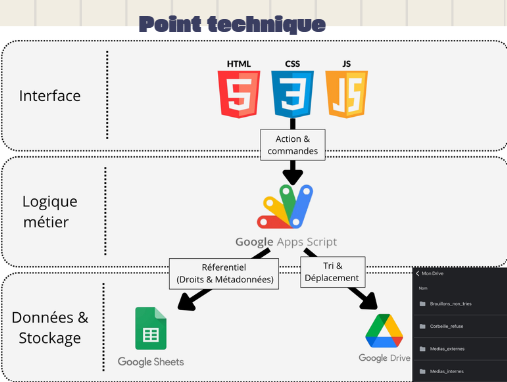
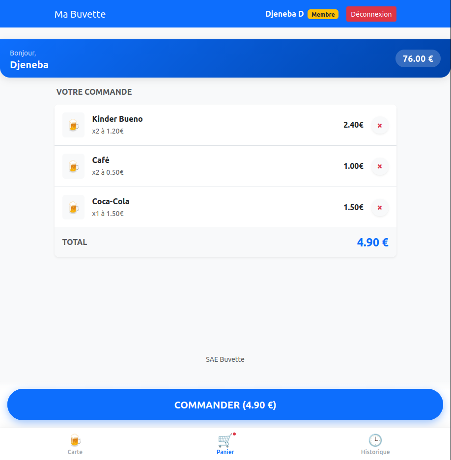
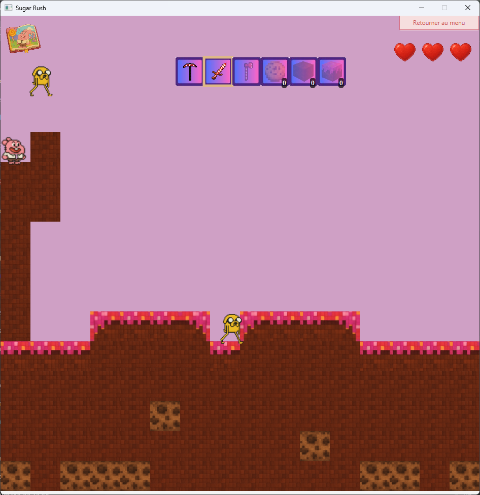
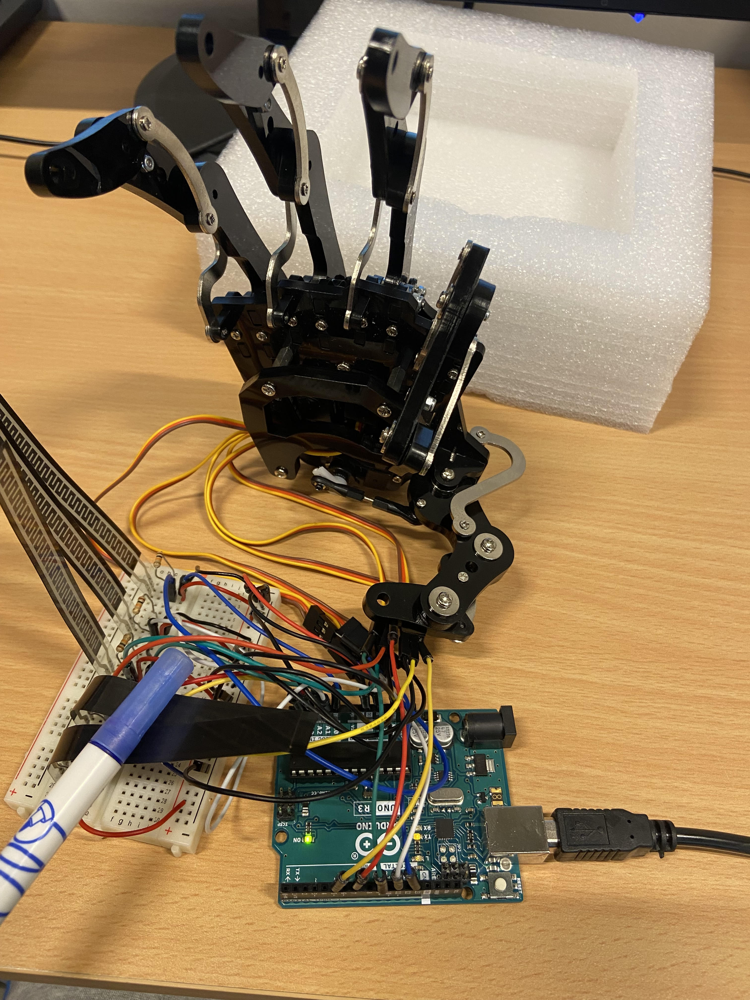
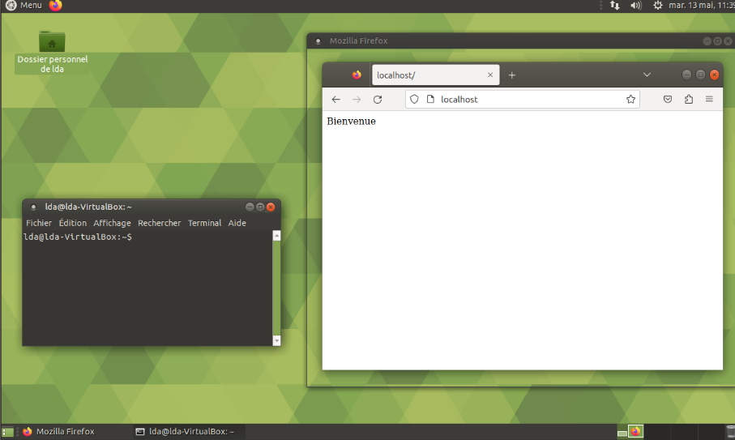
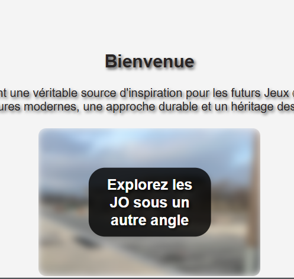
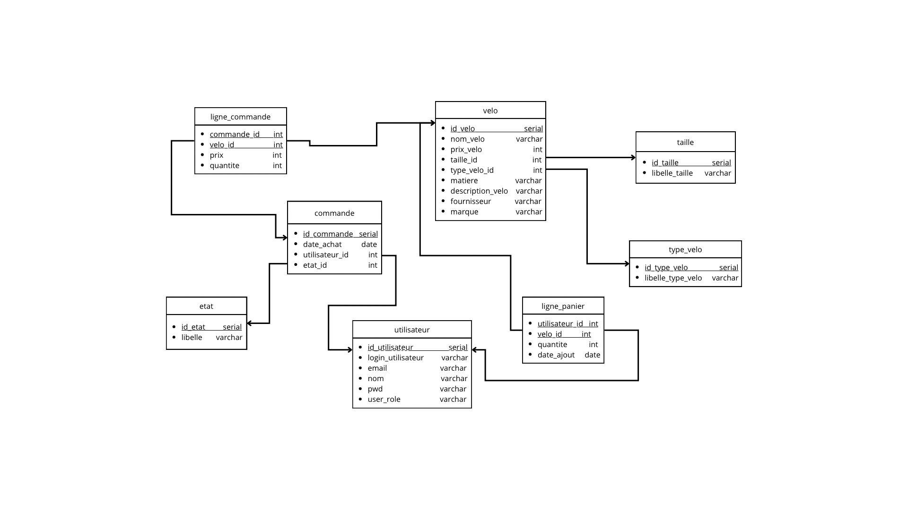

Djeneba Diallo
Étudiante en 3ème année de BUT Informatique, spécialisation Gestion et Exploitation des Données. Je recherche un stage de 12 à 16 semaines à partir du 8 mars 2026 afin d'appliquer mes compétences en développement et en modélisation.
Change Language / Changer de langue
Étudiante en 3ème année de BUT Informatique, spécialisation Gestion et Exploitation des Données. Je recherche un stage de 12 à 16 semaines à partir du 8 mars 2026 afin d'appliquer mes compétences en développement et en modélisation.

Développement d'une application web (HTML/CSS/JS) et d'un backend Google Apps Script pour Les Ateliers Amasco. Tableau de bord de modération et algorithme d'attribution automatique des droits à l'image.
📊 Découvrir ma soutenance de stageConception et animation d'ateliers d'initiation à l'informatique pour les jeunes. Réalisation de mini-projets variés et adaptables touchant à de multiples domaines : développement logiciel, développement web ou encore gestion de bases de données.

Développement d'une application web permettant de gérer les stocks et les ventes d'une buvette associative. Le projet incluait la conception de la base de données relationnelle et la mise en place d'une interface d'administration pour le suivi des transactions en temps réel.
💻 Cliquer pour voir le code
Ce projet consistait à développer un jeu 2D intégrant un système d’animations, la détection des collisions, un inventaire interactif et une gestion centralisée des événements. L’ensemble reposait sur une architecture MVC afin de garantir une organisation claire du code.
💻 Cliquer pour voir le code
Réalisation d’un système embarqué permettant de contrôler une main robotique à l’aide de capteurs de flexion. Chaque capteur est relié à une carte Arduino. La flexion d’un doigt est lue en entrée analogique et traduite en mouvement du doigt correspondant.
📄 Cliquer pour voir la présentation du projet
Ce projet consistait à créer et configurer une machine virtuelle Ubuntu, puis à installer et paramétrer la suite LAMP (Apache, MySQL, PHP). L'objectif était de déployer un environnement fonctionnel capable d'héberger un site web dynamique.
📄 Cliquer pour voir la présentation
Ce projet consistait à concevoir et développer un mini-site dédié aux Jeux Olympiques, intégrant un design responsive et plusieurs sections dynamiques. L’objectif était de proposer une expérience interactive grâce à des animations JavaScript.
🌐 Cliquer pour voir le site
Ce projet consistait à analyser les besoins d’un système d’information puis à concevoir une base de données complète. Il incluait la réalisation des modèles conceptuel et logique, ainsi que la création du schéma relationnel. L’objectif était d’aboutir à une structure optimisée.
📦 Télécharger le projet (ZIP) Java
Java SQL
SQL HTML
HTML CSS
CSS Ubuntu
Ubuntu Windows
Windows GitHub
GitHub Git
Git IntelliJ IDEA
IntelliJ IDEA VS Code
VS CodeEmail: djenebadiallo06@icloud.com
GitHub: dj3n3b44
Téléphone: 07 67 41 91 70